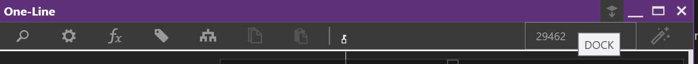

General Navigation Overview
The left side toolbar is also known as the Workspace Toolbar. The grey shading indicates an open workspace, while a purple shading indicates an open and active Workspace.
Workspaces can be hosted on different windows by dragging them outside of THRUX’s main window.
Bring these windows back into THRUX by clicking Dock in the top right.

Electrical Workspaces
The top 3 workspaces, One-Line, Riser, and Schedules, are the main electrical workspaces to build your distribution system.
Architectural Workspaces
The next 2 workspaces, Architectural Elements, and Floor Plans, are mainly used to create the spatial elements which engulf or provide the structure to support your distribution system. These spatial elements will drive distances between equipment, which effect electrical calculations.
Studies
The next workspace, Studies, is used as a reporting mechanism for different study types your design.
Codes
Codes Reference allows designers to view various reference tables, or industry standards.
Change Tracking
Change Tracking allows designers to compare branches of issuances. Results can be exported to an Excel document, by using Copy/Paste.